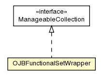

pt.ist.fenixframework.pstm
Class OJBFunctionalSetWrapper

java.lang.Object
 pt.ist.fenixframework.pstm.OJBFunctionalSetWrapper
pt.ist.fenixframework.pstm.OJBFunctionalSetWrapper
- All Implemented Interfaces:
- Serializable, org.apache.ojb.broker.ManageableCollection
public class OJBFunctionalSetWrapper
- extends Object
- implements org.apache.ojb.broker.ManageableCollection
- See Also:
- Serialized Form
| Fields inherited from interface org.apache.ojb.broker.ManageableCollection |
serialVersionUID |
| Methods inherited from class java.lang.Object |
clone, equals, finalize, getClass, hashCode, notify, notifyAll, toString, wait, wait, wait |
OJBFunctionalSetWrapper
public OJBFunctionalSetWrapper()
getElements
public FunctionalSet getElements()
ojbAdd
public void ojbAdd(Object anObject)
- Specified by:
ojbAdd in interface org.apache.ojb.broker.ManageableCollection
ojbAddAll
public void ojbAddAll(org.apache.ojb.broker.ManageableCollection otherCollection)
- Specified by:
ojbAddAll in interface org.apache.ojb.broker.ManageableCollection
ojbIterator
public Iterator ojbIterator()
- Specified by:
ojbIterator in interface org.apache.ojb.broker.ManageableCollection
afterStore
public void afterStore(org.apache.ojb.broker.PersistenceBroker broker)
throws org.apache.ojb.broker.PersistenceBrokerException
- Specified by:
afterStore in interface org.apache.ojb.broker.ManageableCollection
- Throws:
org.apache.ojb.broker.PersistenceBrokerException
Copyright © 2013. All Rights Reserved.